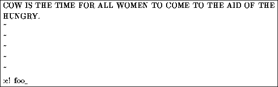

To edit another file, use the :e command. For example, to stop editing test, and edit the file foo instead, use the command
If you use :e without saving the file first, you'll get the error message
which simply means that vi doesn't want to edit another file until you save the first one. At this point, you can use :w to save the original file, and then use :e, or you can use the command

The ``!'' tells vi that you really mean it---edit the new file without saving changes to the first.